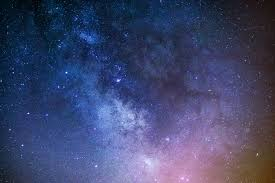
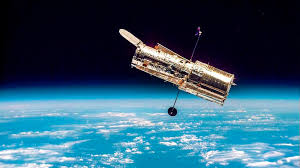

Галерея

Ласкаво просимо на наш сайт, присвячений вивченню безмежного космосу! 🌌
Космос — це безмежний простір, що містить усі планети, зорі, галактики та інші небесні тіла. Вивчення космосу допомагає нам зрозуміти походження Всесвіту та майбутнє людства.
Спробуй пройти вікторину про космос і перевірити свої знання!
(Інтерактив буде додано пізніше)
Автор: Ім'я Прізвище
Email: example@email.com